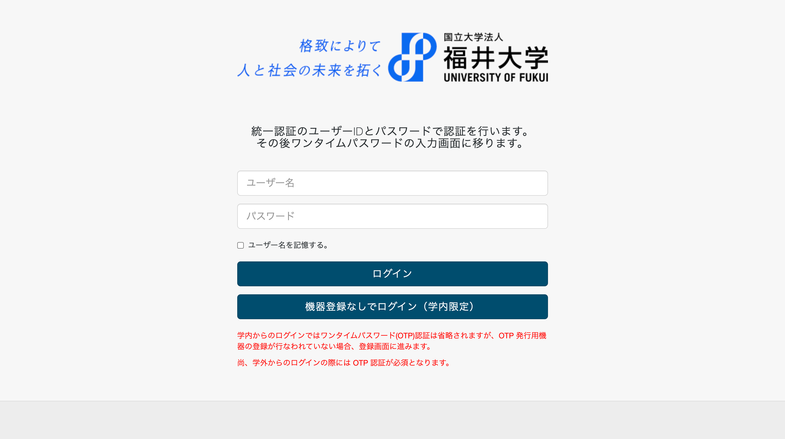
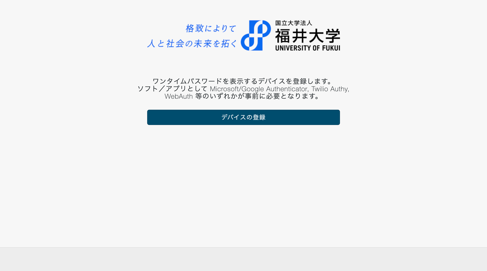
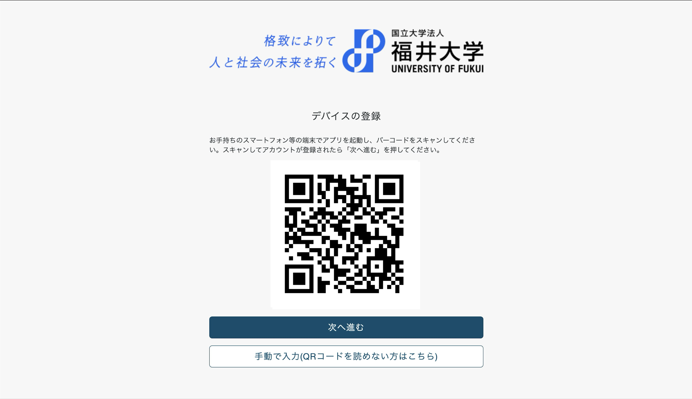
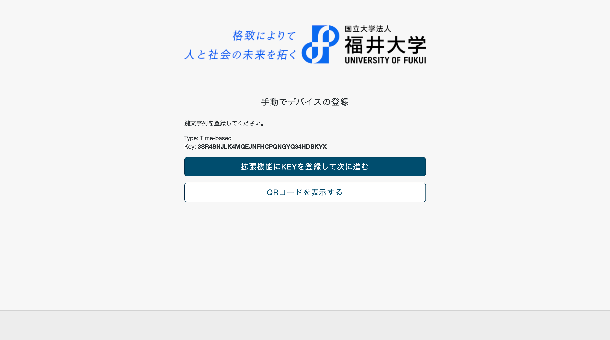

ワンタイムパスワードの自動入力
学生ポータルを開きます。
ログインをします。
デバイスの登録をクリックします。
スマホなど他の端末にも登録しておきたい場合はQRコードを読み取っておきます。パソコンのみ登録する場合は、手動で入力をクリックします。
この拡張機能をインストールしてある場合は、ボタンが「拡張機能にKEYを登録して次に進む」に変わっているので、そのボタンをクリックすることで、KEYを登録することができます。
ワンタイムパスワードの確認画面では、自動で入力、送信されます。
以上で、設定は完了です。これ以降は、ワンタイムパスワードは自動で入力送信されます。